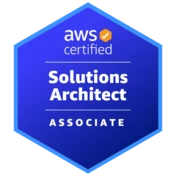
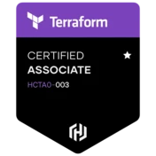
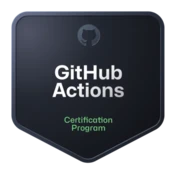

Aug 2023 — Dec 2024
Master's in Computer Science
University of Missouri–Kansas City · Kansas City, MO
GPA 3.8 / 4.0
DevOps Engineer · Open to new roles
I'm Sai Harsha Vemula, a DevOps engineer with 4+ years across AWS, Kubernetes, Terraform and CI/CD. I build cloud platforms that are secure, observable and cost-efficient, from enterprise software to national-scale research systems.
01 About
I'm a DevOps engineer who builds cloud infrastructure that's secure, automated and cost-efficient. In 4+ years I've run production systems at Vitrana and at the University of Alabama, where I owned the AWS platform behind a national-scale water-forecasting system.
I work mostly on AWS, with some Azure. I automate everything I can with Terraform, Ansible and Python, and ship containers through CI/CD and GitOps pipelines on Docker and Kubernetes.
I treat security, observability and cost as part of the design: least-privilege IAM, vulnerability scanning in every pipeline, monitoring that shortens incident response, and regular audits that keep cloud bills in check.
I'm looking for my next role on a DevOps, platform or cloud-infrastructure team.
02 Experience
Alabama Water Institute / CIROH, University of Alabama Tuscaloosa, AL
Owned production AWS infrastructure for the NextGen Research DataStream (NRDS): 1,213 EventBridge schedules, 24 Lambda functions, 26 AMIs, 27 IAM roles and 20 S3 buckets powering daily nationwide hydrologic forecasts.
Vitrana, Inc. Bangalore, India
Vitrana, Inc. Bangalore, India
Aug 2023 — Dec 2024
University of Missouri–Kansas City · Kansas City, MO
GPA 3.8 / 4.0
Jun 2016 — Jun 2021
Vellore Institute of Technology · Vellore, India
CGPA 8.80 / 10
03 Projects
Featured · CIROH · Open source
I led DevOps and infrastructure automation for the Research DataStream, which has completed 68,000+ hydrologic model runs. Each day an EventBridge schedule starts a Step Functions workflow for every one of 21 VPUs. It launches a Graviton instance from a baked AMI, runs the DataStream CLI, polls until the run finishes, confirms the output in S3, and then tears everything down.
Data platform
Designed and deployed a scalable AWS data analytics platform on Apache Spark and Elasticsearch. Automated pipelines cut processing time by 40%, and Terraform-managed infrastructure cut costs by 30%.
Microservices
Built a microservices healthcare platform in Java and Spring Boot, focused on scalability and fault tolerance. It runs as Docker containers on Kubernetes, and Jenkins/GitLab pipelines cut deployment time by 50%.
04 How this site is built
Static files sit in a private S3 bucket behind CloudFront, on a Route 53 domain. The chat assistant goes through API Gateway to a Lambda that calls Amazon Bedrock (Claude Haiku 4.5), wrapped in Bedrock Guardrails. It knows my resume, so you can ask it anything.
05 Talks & posters
May 27–29, 2026 · University of Utah, Salt Lake City
4th annual CIROH Developers Conference
CIROH CyberInfrastructure · NextGen Research DataStream (NRDS) · NextGen In A Box (NGIAB)
I spent a few days in Salt Lake City with the CIROH community, a room full of the people building the National Water Model. I presented our work on CIROH's CyberInfrastructure, NRDS and NGIAB.
Behind the scenes, I worked with the CIROH CyberInfrastructure team to provision and support the cloud resources for the entire event.
Most of the interesting DevOps work lives in the gap between "research code" and "production system". In scientific computing, cost and reliability are what make the science repeatable.View NRDS slides →
Dec 2025 · New Orleans, LA
Cloud Infrastructure for NextGen Water Resources Modeling: CIROH's Research to Operations Hybrid Cloud (R2OHC) Platform · Paper H41Q-1425
Poster session on R2OHC, a multi-cloud stack spanning AWS, Google Cloud, Azure and on-premises HPC that I helped build as part of the CIROH CyberInfrastructure team. It serves 28 consortium institutions and runs compute-heavy NextGen water simulations through containerized workflows (Docker/Singularity), managed JupyterHub environments and IaC.
06 Certifications
Selected for AWS's program for technical community contributors who share knowledge about building on AWS.

Designing secure, scalable, cost-efficient systems on AWS, from IAM and VPC design to storage, compute and networking trade-offs.
Verify on Credly ↗
Hands-on IaC concepts, state and module design, and provisioning real resources with Terraform.
Verify on Credly ↗
CI/CD workflow authoring, reusable workflows, secrets and OIDC federation, and custom actions.
Verify on Microsoft Learn ↗Azure core services, identity, governance and security fundamentals.
Verify on Microsoft Learn ↗07 Testimonials
"Harsha is a true asset to any team he joins. He consistently goes above and beyond his assigned responsibilities, delivering his work with precision and care. He's always willing to jump in and support teammates with IT and DevOps needs, no matter the ask.
As a key member of the CIROH CyberInfrastructure team, Harsha helped build the infrastructure-as-code for the NGIAB-NRDS project and did outstanding work managing AWS costs and resources. He also maintains an impressive professional portfolio site, reflecting both his technical skill and his genuine passion for building tools that solve real-world problems.
I give Harsha my highest recommendation for any DevOps or DevSecOps Engineer role."
"Harsha is an absolute gem to work with. He is easily one of the most proactive engineers I have worked with. That showed in how he managed our AWS infrastructure and stayed on top of the costs. He was always finding something to optimize and he handled the security side just as carefully.
On the NRDS project, Harsha was a huge resource for me, patiently walking me through the AWS architecture whenever I needed help. He kept learning something new on his own and he never kept it to himself. He would often share it with the team to help us with our work.
I learned a lot from working with him. Any team would be lucky to have him."
"Harsha applies a dedicated curiosity that results in high quality work. He was an asset almost immediately upon joining the NRDS-NGIAB project, developing the core NRDS deployment mechanisms, and rapidly grew to be a primary maintainer of the software tooling ecosystem. I have confidence Harsha is a worthy addition to any software development team."
"He consistently demonstrated his expertise in CI/CD pipelines, automation, and cloud infrastructure management. Sai is technically proficient and an excellent team player. His proactive attitude and dedication ensured our projects were completed efficiently and successfully."
"As Sai Harsha's lead, I am consistently impressed by his expertise in AWS, DevOps, Kubernetes, Shell Scripting, and GitLab. He has been instrumental in managing complex systems and implementing seamless CI/CD processes."
"His outstanding work in formalizing our pipeline architecture significantly improved our workflows. Sai is a team player with strong communication skills and a commitment to delivering results."
"His expertise in AWS, Docker, GitLab, Terraform, and CI/CD pipelines made him a go-to person for automation. Harsha excels in managing complex projects and delivering scalable, efficient solutions."
"I can attest to his technical expertise in GitLab, AWS, Kubernetes, and Terraform. His meticulousness and ability to find creative solutions to complex problems have been a valuable asset to our team."
08 Writing
09 Contact
Open to DevOps, platform and cloud-infrastructure roles. The fastest way to reach me is email or a quick call.
Ask about Harsha
Bedrock · Claude Haiku 4.5 · guardrailed
↑↓ to navigate · ↵ to select · esc to close